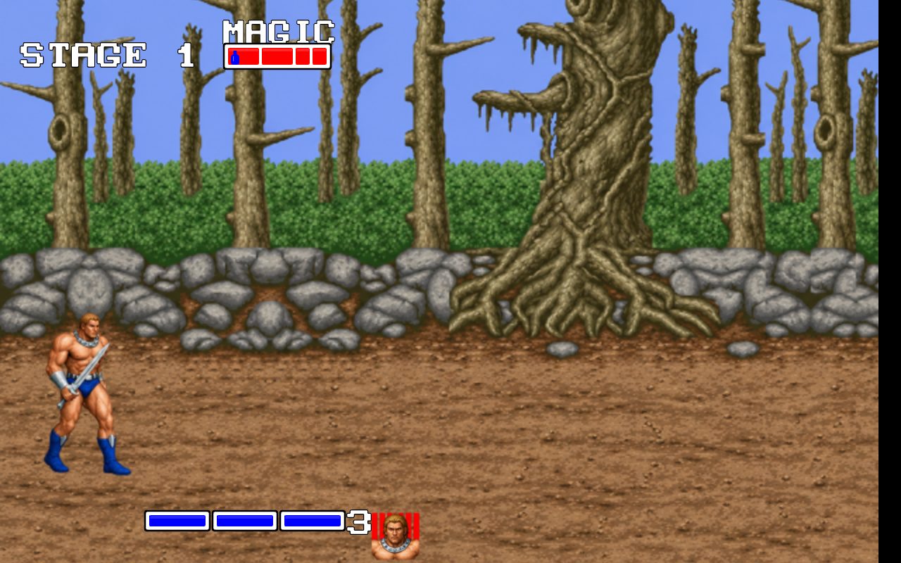
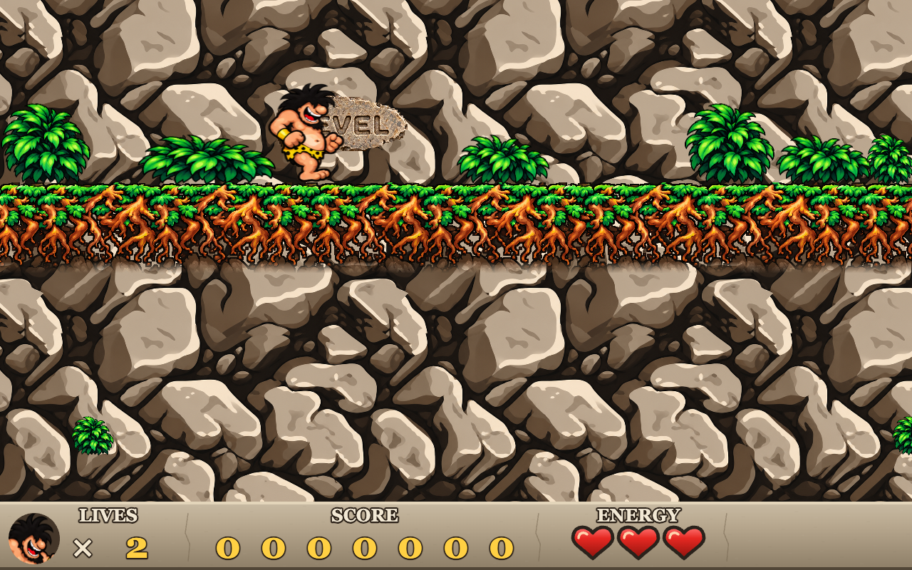
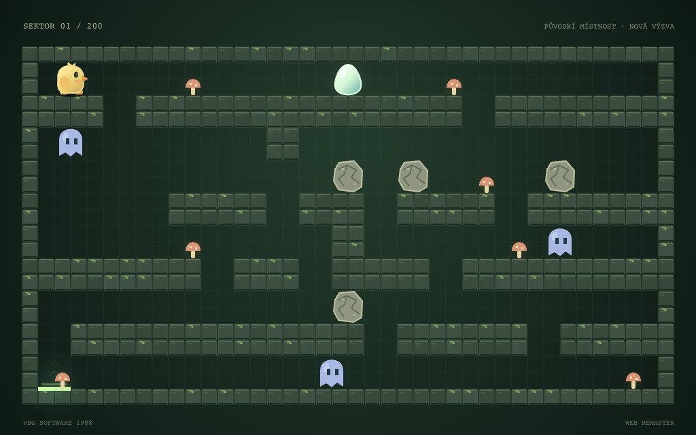

A PLAYABLE ARCHIVE
Old worlds.
New life.
Games we grew up with.
Rebuilt for the browser, with their spirit intact.
CHOOSE YOUR WORLD
Back to the good stuff.

01 / DOSFANTASY · BEAT 'EM UP
Golden Axe
Three heroes. One legendary axe.
Take on the adventure solo or together.

02 / DOSPLATFORMER · EXPLORATION
Prehistorik 2
A caveman with an appetite.
Secrets behind every suspicious stone.

03 / PMD 85PUZZLE · STRATEGY
Flappy
One little bird. One precious egg.
Think a move ahead, then make it count.
MORE THAN A COAT OF PAINT
Remember the feeling.
Rediscover the game.
Remastered brings classic games to modern browsers through original-game research, rebuilt engines and carefully updated presentation. Each game has its own world, controls and documented fidelity checks.
Explore remastered artwork and sound, compare original editions where available, and play with a keyboard or supported touch controls. The source and remaining limitations are open for everyone to inspect.
Explore the project on GitHub